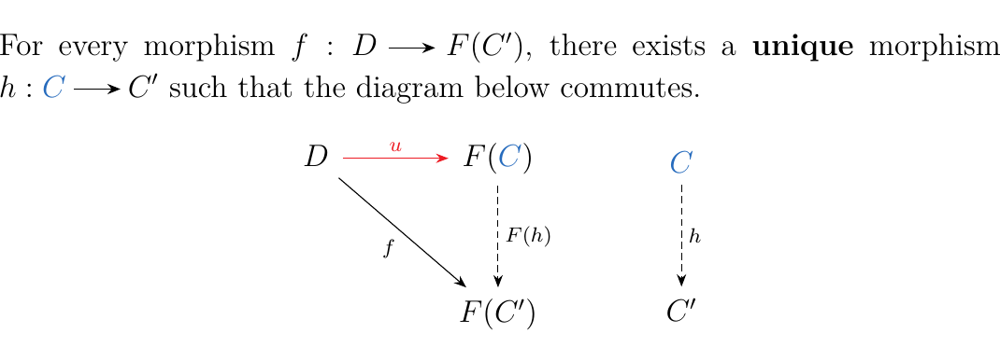
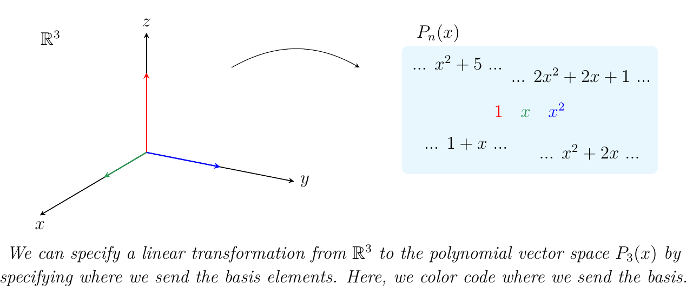
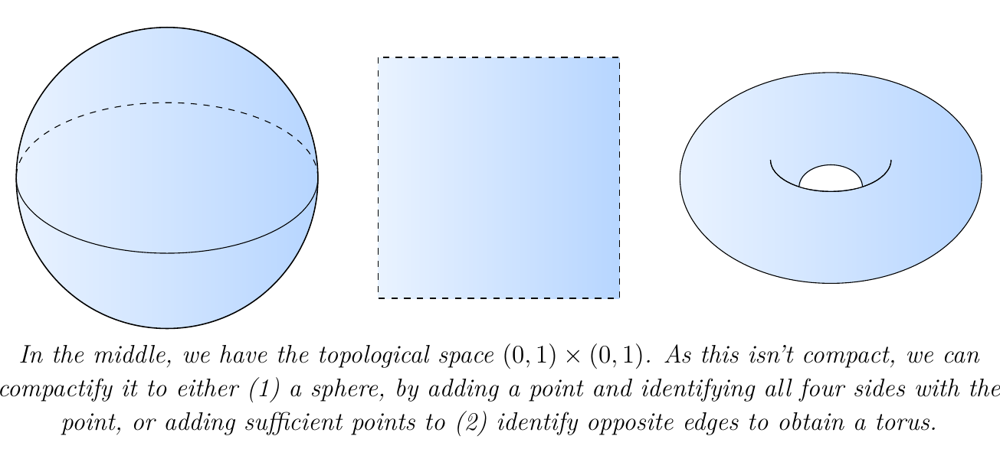
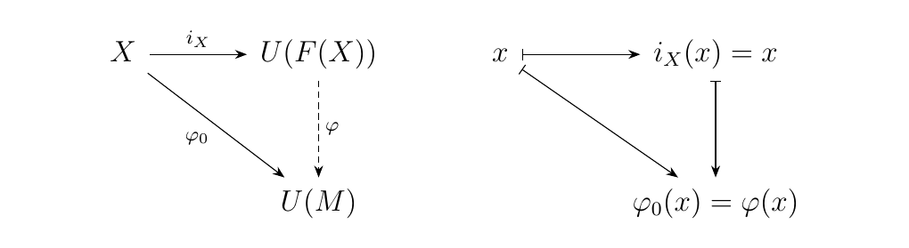
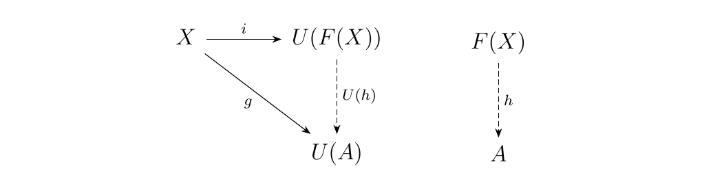
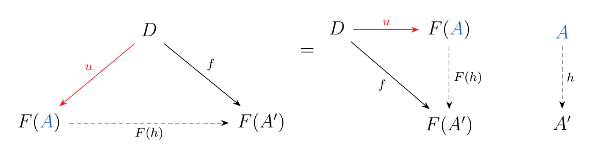
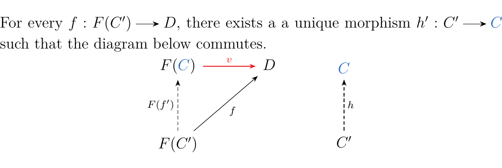
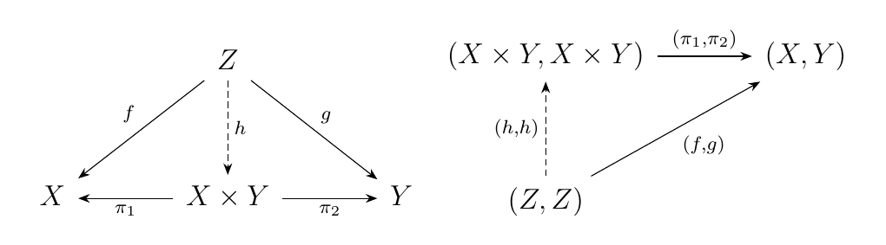

3.1. Universal Morphisms
This chapter is probably the most important chapter in these notes. In an ideal world, this chapter would be the first chapter. However, that would pedagogically go over terribly. The discussion requires categories, functors, and natural transformations; we need the language these concepts offer to even begin to rigorously define what a universal construction even is.
But at this point, we are in fact equipped with the fundamentals. So we can now go on and define what a universal construction is, and demonstrate its prevalence in mathematics and therefore the usefulness of category theory as a convenient language to discuss these concepts.
To begin, we will motivate with a few examples.
Let \(\phi, \psi: (G, \cdot) \to (H, +)\) be a pair of abelian\footnote{The abelian-ness becomes important later.} group homomorphisms. We now ask the question: \begin{center} \textcolor{NavyBlue}{What is the set of all \(g \in G\) such that \(\phi(g) = \psi(g)\)? Is it a subgroup of \(G\)?} \end{center} To determine this, it is equivalent to asking when \(\phi(g) - \psi(g) = 0 \implies (\phi - \psi)(g) = 0\). Hence every such \(g \in G\) lies in the kernel of \(\phi - \psi: G \to H\), and every element in the kernel is such a desired element; so we've answered the first question. The kernel is a subgroup of \(G\), so we've answered the last question. Now because this is a kernel, it has an inclusion homomorphism \(i: \ker(\phi - \psi) \to G\). So far, our picture looks like this: \ and clearly \(\phi \circ i = \psi \circ i\). Now suppose that \(\sigma: K \to G\) is another group homomorphism with the property that \(\phi \circ \sigma = \psi \circ \sigma\). Then by our previous work, this means that for each \(k \in K\), we have that \(\sigma(k)\in\ker(\phi - \psi)\). That is,
Hence instead of mapping \(K\) into \(G\), we can instead map \(K\) into \(\ker(\phi - \psi)\), and then travel back to \(G\) using \(i\). So, there is a unique morphism \(\tau: K \to \ker(\phi - \psi)\) such that the diagram below commutes (Prove it is unique; it shouldn't be too bad). \
What's really going on? This is an example of a universal construction. We have a "supreme" morphism \(i: \ker(\phi -\psi) \to G\) with the property that \(\phi \circ i = \psi \circ i\). Any other morphism \(\sigma: K \to G\) with the same property that \(\phi\circ\sigma = \psi \circ \sigma\) must factor through the "supreme" morphism \(i\) in a unique way. Uniqueness here is very important.
Now, if you haven't seen this definition before, it's going to sting a little, and you'll probably have to read it 20 times and do many, many examples (not just look at examples, you have to do some yourself) to achieve true understanding. But here we go:
Let \(F: \cc \to \dd\) be a functor and \(D\) an object of \(\dd\). Define a **universal morphism from \(\bm{D**\) to \(\bm{F}\)} to be a morphism
with \(\textcolor{NavyBlue}{C} \in \ob(\cc)\) and \(\textcolor{Red}{u}\) a morphism in \(\dd\) equipped with the universal property: \  \end{center} The arrow \(h\) is dashed, and should be read as "there exists an \(h\).'' This is a practice that we will continue to use throughout this text.
To the beginner, this definition will most likely make zero sense. The only way that it will make sense is to see the definition in action.
A universal arrow can also be thought of as a pair \((\textcolor{NavyBlue}{C}, \textcolor{red}{u}: D \to F(\textcolor{NavyBlue}{C}))\). This just emphasizes that \(\textcolor{NavyBlue}{C}\) is special. This isn't really useful for us to imagine in this way right now. So you don't have to think of it as a pair, so long as you remember you're mapping to \(F(\textcolor{NavyBlue}{C})\).
The point is that any arrow of the form \(f: D \to F(C')\) forces the unique existence of an arrow \(f' : C \to C'\) such that \(F(h) \circ \textcolor{Red}{u} = f\).
Let \(V\), \(W\) be finite-dimensional vector spaces over a field \(k\). Denote their bases as \(\{v_1, v_2, \dots, v_n\}\) and \(\{w_1, w_2, \dots, w_m\}\). \begin{center} \begin{minipage}{0.8\textwidth} Q: What does it take for a function \(T: V \to W\) to be a linear transformation? \end{minipage} \end{center} Well, suppose we have a linear transformation. Since each element of \(V\) may be written as \(c_1v_1 + \cdots + c_nv_n\) for \(c_i \in k\), we see that
Thus we have an answer. \begin{center} \begin{minipage}{0.8\textwidth} A: To define a linear transformation \(T: V \to W\), it suffices to specify where we want \(T\) to send the basis elements \(v_1, \dots, v_n\). \end{minipage} \end{center} An illustration of this fact is below. \  \noindent This observation helps us build our first example of universality.
Let \(X\) be a (possibly infinite) set. For a field \(k\), we can generate a vector space \(\textcolor{NavyBlue}{V_x}\) (Note the color-coding here corresponds to the color-coding in the definition of a universal morphism) whose basis elements are \(x \in X\). Specifically,
Now let \(**Vect**_{k}\) be the category of vector spaces over the field \(k\). Let \(U: **Vect**_{k} \to **Set**\) be the forgetful functor which sends the vector space \(V\) to the set containing all its elements. For any set \(X\), then there is an inclusion map
This inclusion map has the following property. Let \(W\) be any vector space, and suppose that we have a function \(f: X \mathbin{\textcolor{red}{\to}} U(W)\). This is kind of funny. A map \(f: X \mathbin{\textcolor{red}{\to}} U(W)\) simply picks out a \(w_x \in W\) for each \(x \in X\). Since \(X\) is a basis for \(\textcolor{NavyBlue}{V_x}\), this "picking out" defines a linear transformation \(T: V \to W\). That is, such an \(f: X \to U(W)\) allows us to define a linear transformation where for each basis element \(x \in X\)
Since we know where the basis elements go, we see that such a linear transformation is well defined. Moreover, we see that our construction makes the diagram below commute. \ Therefore, we see that a universal morphism from \(X\) to the forgetful functor \(U: **Vect**_k \to **Set**\) is its inclusion morphism \(i: X \to U(V_x)\) into the vector space \(V_x\) generated by \(X\).
Several key concepts in topology are secretly universal properties in disguise. This is because in some sense, the problem of universality is an optimization problem. And in elementary topology, we are often trying to optimize a given topological space with a desired property. For example, the closure of a topological space \(X\) is the "largest closed set" containing \(X\). We'll elaborate more on this.
Let \(X\) be a topological space. In topology, it is often of interest to consider a compactification of the space \(X\). Such a story goes like this: Given \(X\), we seek a compact space \(X^*\) such that \(X\) embeds as a dense subspace of \(X^*\). In other words, we want a compact \(X^*\) which has a dense subspace \(S \subset X^*\) that is homeomorphic to \(X\). We can then identify \(X\) with \(S\) and work within \(X^*\), which is a nicer space to work inside of. \ 
We can, however, do even better. We can compactify \(X\) into a space that is not only compact, but is also Hausdorff. The optimal compactification for this situation is the Stone-Čech Compactification, which is defined as follows. Given a topological space \(X\), the Stone-Čech compactification is the compact, Hausdorff space \(\beta X\), equipped with a dense embedding \(i_X: X \to \beta X\) such that, for any other compact, Hausdorff space \(K\) equipped with a continuous map \(f: X \to K\), there exists a unique continuous function \(\beta f: \beta X \to K\) such that \ This universal property is what demonstrates that the Stone-Čech compactification \(\beta X\) is the "most compact, Hausdorff" space we can densely embed \(X\) into. However, in the language of category theory we see that this is just another example of a universal morphism. To see this, let \(I: **CHaus** \to **Top**\) be the inclusion functor from compact Hausdorff spaces into topological spaces. Then we can rewrite the diagram as \ Of course, in practice, we'd never actually write it like this; but this is just for us to be able to see that the dense embedding \(i_X: X \to \beta X\) is universal from \(X\) to the the inclusion functor \(I: **CHaus** \to **Top**\), so that the Stone-Čech compactification is truly an example of a universal morphism.
Consider the free monoid functor \(F: **Set** \to **Mon**\) which sends a set \(X\) to the free monoid generated by \(X\). Specifically,
The set consists of all strings using elements of \(X\), and an identity \(e\); the monoid product is concatenation.
Suppose I have a monoid homomorphism \(\phi: F(X) \to M\) where \(M\) is another monoid. Then for any two \(x_1, x_2 \in X\), we have that \(\phi(x_1x_2) = \phi(x_1)\phi(x_2)\). More generally, for any \(x_1\cdots x_n \in F(X)\), we have that
We thus see the following: To define a monoid homomorphism, we just need to know where to send every individual \(x \in X\). This is achieved by defining a set function \(\phi_0: X \to U(M)\), and by setting \(\phi(x) = \phi_0(x)\). This makes the diagram below commutative. \  We thus see that \((X, i_X: X \to F(X))\) is universal from \(X\) to \(U: **Mon** \to **Set**\).
Let \((R, +, \cdot)\) be a ring and \(k\) a field. Suppose further that \(R\) is a \(k\)-algebra. Then for any set \(X = \{x_1, \dots, x_n\}\) of indeterminates, we can create a free algebra generated by \(X\), denoted as \(k\{X\}\). One can show that this defines a functor
mapping sets \(X\) it \(k\{X\}\) and functions \(f: X \to Y\) to the \(k\)-algebra morphism \(\phi: k\{X\} \to k\{Y\}\) where \(\phi\) is defined linearly by its action on the basis elements sending each \(x \to f(x)\). On the other hand, note that we can also create a forgetful functor
which simply reinterprets each \(k\)-algebra as a set and each \(k\)-algebraic morphism as a function.
Now consider a mapping \(f: X \to U(R)\) in Set. Because we also have a mapping \(i: X \to U(F(X))\), which acts an inclusion function, we see that we can create a mapping \(h: F(X) \to A\) such that the diagram below commutes. \  The way we do this is we defined \(h: F(X) \to A\) to act linearly on the basis elements, sending \(x \mapsto g(x)\). This defines a \(k\)-algebraic morphism and makes the above diagram commute. In this case, we say that \((F(X), i: X \to U(F(X)))\) is universal from \(X\) to the forgetful functor \(U: **Alg**_k \to **Set**\).
When we discuss a universal morphism from \(D\) to \(F: \cc \to \dd\), we are particularly discussing a morphism \(u: D \to F(C)\) and a special object \(C\). Hence, we can actually write a universal morphism as a pair \((C, u: D \to F(C))\). Does this look familiar? This is an object of the category \((D \downarrow F)\)! Hence, universal morphisms can actually be thought of as elements in a comma category. Under this intepretation, what does the universal property translate to? The next proposition answers our question.
Let \(F:\cc \to \dd\) be a functor. A morphism \(u: D \to F(C)\) is universal from \(D\) to \(F\) if and only if \((C, u:D \to F(C))\) is an initial object of the comma category \((D \downarrow F)\)
So, as we will see, the universal property of a universal morphism \(u: D \to F(C)\) translates to \((C, u: D \to F(C))\) being an initial object in some comma category.
Let \(F: \cc \to \dd\) be a functor, and \(D\) an object of \(\dd\). Recall that the category \((D \downarrow \dd)\) is the category where \begin{description} \item[Objects.] Pairs \((C, f: D \to F(C))\) with \(C \in \cc\) and \(f: D \to \dd\) a morphism in \(\dd\). \item[Morphisms.] Morphisms between two objects \((C, f: D \to F(C))\) and \((C', f: D \to F(C'))\) are given by morphisms \(h: C \to C'\) such that the diagram below commutes. \ \end{description} Suppose \((\textcolor{NavyBlue}{A}, u: D \mathbin{\textcolor{Red}{\to}} F(\textcolor{NavyBlue}{A}))\) is an initial object in \((D \downarrow F)\). Then for every other pair \((A, f: D \to F(A'))\), there exists a unique morphism \(h: A \to A'\) such that the diagram on the bottom left commutes. \  However, if we rearrange this we see that this is just the universal property in disguise! Conversely, any pair \((A, f: A \to F(A))\) being a universal morphism can be demonstrated to be an initial object in \((D, \downarrow F)\) by reversing the above proof.
Now, we didn't do this just for fun. The interpretation of a universal morphism as an initial object of a comma category theory will serve to be very useful, just not now. As of now it does not really grant us much. But when we are deep into the chapter on Limits, this intrepretation will become useful.
One thing that the interpretation does grant us for now is the following theorem, which requires essentially no proof if we understand a universal morphism is an initial object of a comma category. This theorem explains ultimately why we care about universal morphisms; they're like categorical invariants!
Let \(F: \cc \to \dd\) be a functor and \(D \in \dd\). Suppose \(u: D \to F(C)\) is universal from \(D\) to \(F\) for some object \(C \in \cc\). If \(u': D \to F(C')\) is also universal from \(D\) to \(F\), then \(C \cong C'\).
Universal morphisms \(u: D \to F(C)\) are initial objects in the comma category \((D \downarrow F)\), and initial objects are always unique up to isomorphism. Hence \((C, u:D \to F(C))\) with the universal property is unique.
However, the direct proof, where we do not use the interpretation of a comma category, is left as an exercise. It's actually very important to see and understand the direct proof.
As with most constructions within category theory, there is a dual construction. That, is there is another form of universality which is equally as important as the one we originally introduced. So, in general, there are two forms of universality.
Let \(F: \cc \to \dd\) be a functor and \(C\) an object of \(\cc\). A **universal arrow from \(\bm{F**\) to \(\bm{C}\)} is a morphism
equipped with the universal property: \  Note that this is basically the previous definition of a universal arrow from an object to a functor, except the direction of the arrows have been flipped. This is why we called this the "dual" definition of the previous one. This motivates the following statement which requires no effort to prove.
Let \(\cc\) be a category and \(F: \cc \to \dd\) be a functor. If \(\cc\) has a universal morphism from \(D\) to \(F\), then \(\cc\op\) has a universal morphism from \(F\) to \(D\).
So we see that the two notions of unviversality we've introduced really are dual concepts. Both are equally important, and we will see that they both arise as very deep concepts in mathematics. Not just in the examples we've provided, but in deeper pure category theory.
Anyways, we can repeat the propositions we worked on.
Let \(F: \cc \to \dd\) be a functor. A morphism \(u: F(C) \to D\) is universal from \(F\) to \(D\) if \((C, u: F(C) \to D)\) is a terminal object of the comma category \((F \downarrow D)\).
This is left as an exercise, and should be similar to our proof from before. And as before, we get our second important theorem:
Let \(F: \cc \to \dd\) be a functor, with \(u: F(C) \to D\) universal from \(F\) to \(D\). Then if \(u': F(C') \to D\) is also universal from \(F\) to \(D\), then \(C \cong C'\).
Universal morphisms from \(F\) to \(D\) are terminal objects in a comma category, and terminal objects are always unique up to isomorphism.
The direct proof is also an exercise. \vspace{0.5cm}
{\large Exercises \vspace{0.5cm}} \def\exerciseCartesianProduct{4}
-
[1.] Prove Theorem \ref{theorem:universal_elements_are_isomorphic} directly, and dualize your proof to prove Theorem \ref{theorem:couniversal_elements_isomorphic} directly.
-
[2.] Prove Proposition \ref{proposition:universal_elements_in_comma_cats}.
-
[3.] For each ring \(R\), we may construct the single-variable polynomial ring \(R[x]\). This process defines a functor \(**Poly**: **Ring** \to **Ring**\).
Show that for each ring \(R\), the inclusion ring homomorphism \(i: R \to R[X]\) is a universal morphism from \(R\) to Poly.
-
[4.] Let \(X\) and \(Y\) be two sets, and consider their product \(X \times Y\). Recall that with any product, we have "projection maps" \(\pi_1: X \times Y \to X\) and \(\pi_2: X \times Y \to Y\) where \(\pi_1(x,y) = x\) and \(\pi_2(x,y) = y\). \begin{itemize}
-
[\(i.\)] Suppose we have functions \(f: Z \to X\) and \(g: Z \to Y\). Show how this gives us a map \(h: Z \to X\times Y\), and show that this map is unique (to the pair \(f\) and \(g\)).
-
[\(ii.\)] Using your map \(h: Z \to X \times Y\), show that the diagram on the left commutes, and that the diagram on the right is equivalent.
\  To be clear, the diagram on the right is in the category \(**Set**\times **Set**\). -
[\(iii.\)] Let \(\Delta: **Set**\to **Set**\times**Set**\) be the "copy functor" which sends \(X \mapsto (X, X)\). Then the above diagram translates to \ Deduce how the product \((\pi_1, \pi_2): \Delta(X\times Y) \to (X,Y)\) is universal from \((X,Y)\) to \(\Delta\). This is an important fact that we'll build upon later.
\item[4.] Let \(X\) and \(Y\) be two sets, and consider the coproduct
Recall that with any coproduct, we'll have "injection maps" \(i_1: X \to X \amalg Y\) and \(i_2: Y \to X \amalg Y\) where \(i_1(x) = (x, 1)\) and \(i_2(y) = (y, 2)\). Repeat (\(i\)-\(iii\)) as in the previous exercise to demonstrate that \((i_1,i_2): (X,Y) \to \Delta(X\amalg Y)\) is universal from \(\Delta\) to \((X,Y)\). \end{itemize}